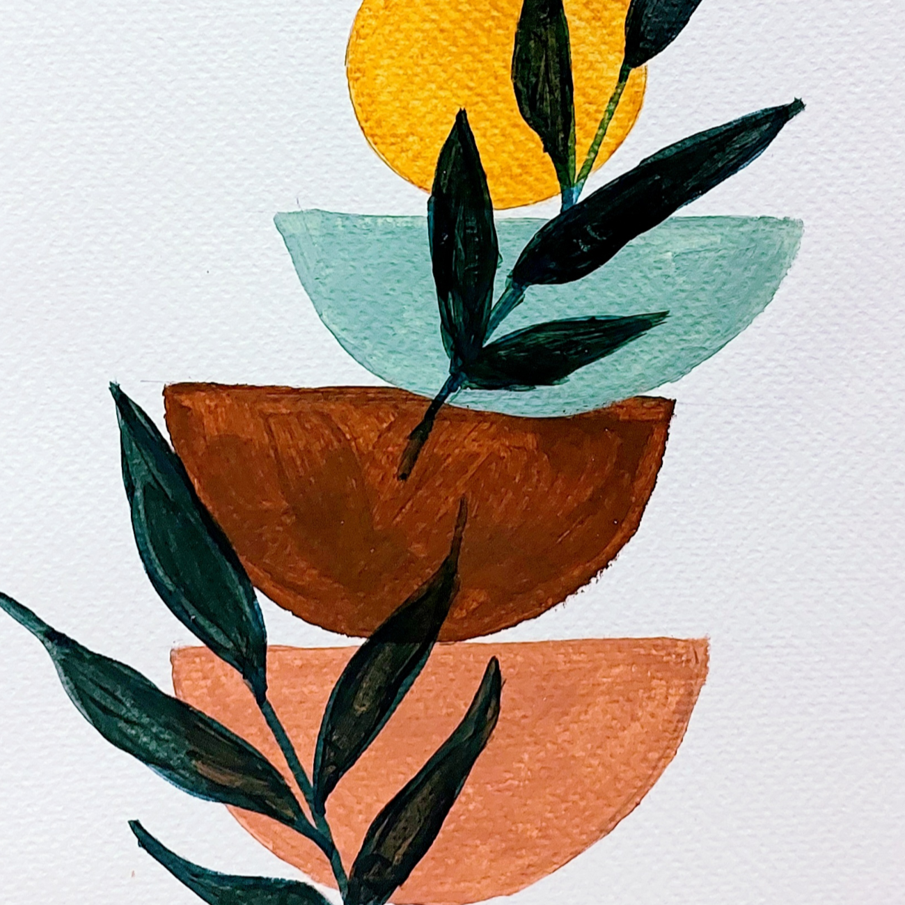
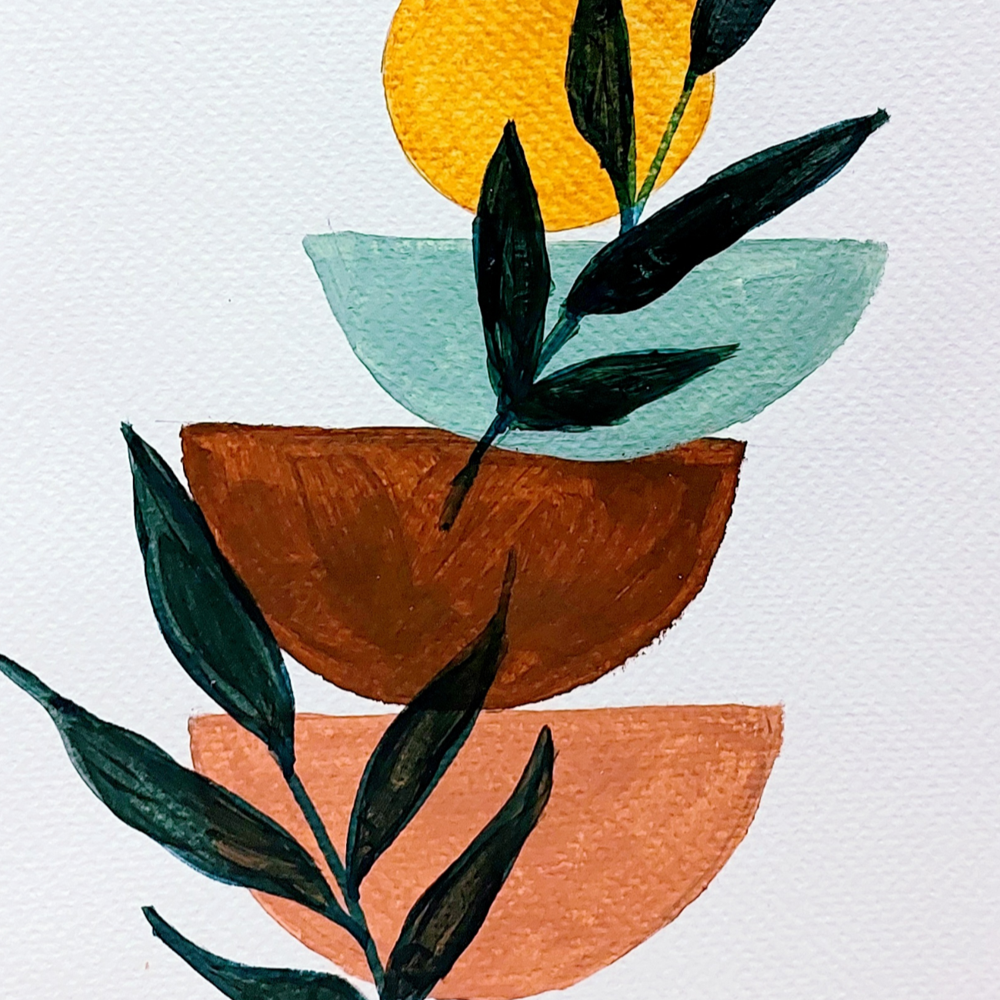
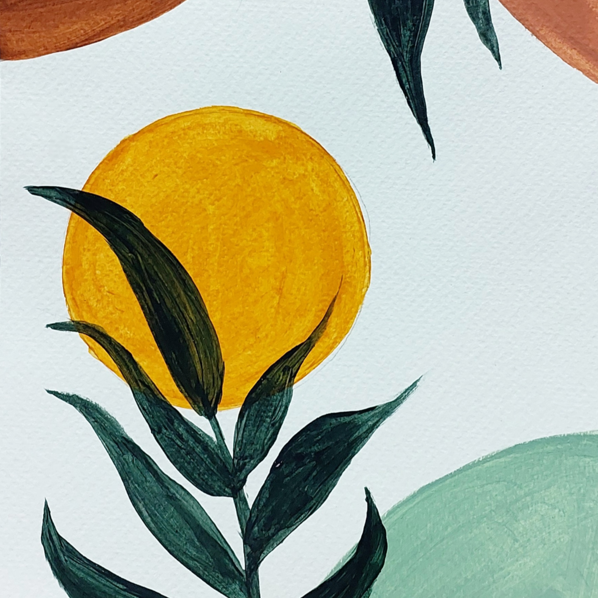
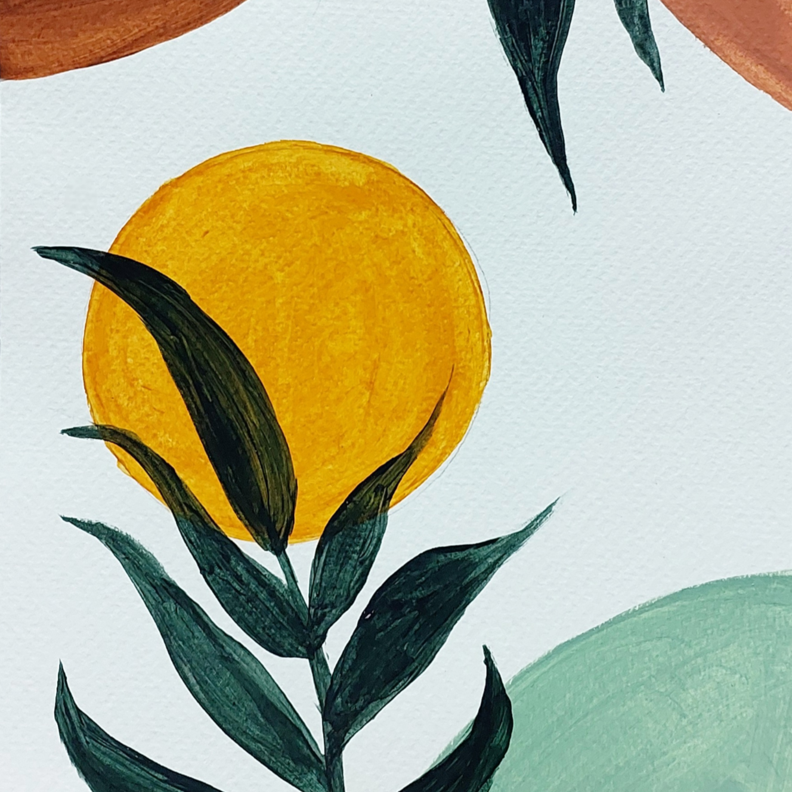

Store
Here you will find the current collection of giclée reproductions from my original drawings. These limited edition fine art prints are personally proofed, signed, and numbered to maintain quality.
Giclée (jhee-clay) is a French word meaning "spraying of paint." The word is used to describe prints produced by digital technology using the highest quality materials that preserve the character of the original artwork. Valuable, pigment-based archival inks are printed onto museum-quality cotton rag paper by a professional art reproduction house. The result is an image of unsurpassed clarity that rivals the beauty and detail of the original work. Giclées are found in most major art museums and fine art galleries.
⎯⎯⎯⎯⎯⎯⎯⎯⎯⎯⎯⎯⎯⎯⎯⎯⎯⎯⎯⎯⎯⎯⎯⎯⎯⎯⎯⎯⎯⎯⎯⎯
 

Abstract Painting 1
From PHP 500.00
 

Abstract Painting 2
From PHP 500.00

Abstract Painting 3
From PHP 500.00